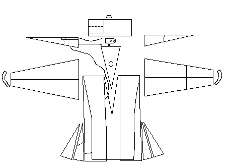
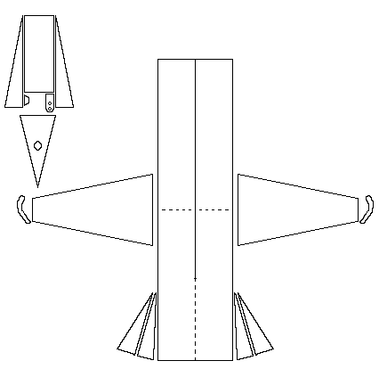
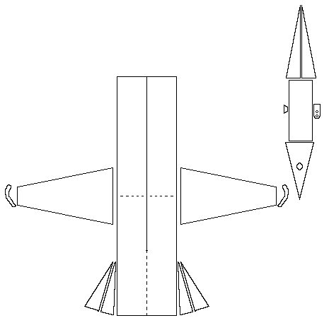

This was based on a photograph sent by "Liebaart" liebaart@tiscalinet.be to 75years@yahoogroups.com. This shirt was supposedly one that was owned by Thomas Becket (1120-1170) and is now in the Abbey of Chelles.
If I've interpreted this correctly, this comes out looking something like this:

or

Return to Shirt Page
Some Clothing of the Middle Ages, Copyright 2001 � I. Marc Carlson This code is given for the free exchange of information, provided the Author's Name is included in all future revisions, and no money change hands-